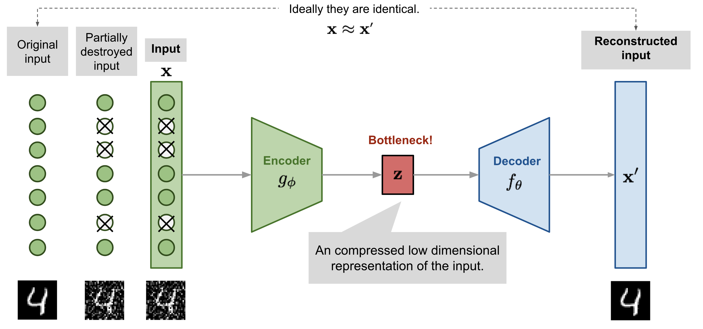

Neurocomputing
Diffusion Probabilistic Models
VAE and GAN transform simple noise into complex distributions


Reminder: Denoising autoencoder
- A denoising autoencoder (DAE) is trained with noisy inputs but perfect desired outputs. It learns to suppress that noise.


Denoising Probabilistic Diffusion Model
- We want to predict the added noise in the image space:
\epsilon_\theta(x_t, t) = \epsilon_\theta(\sqrt{1 - \bar{\alpha}_t} \, x_0 + \bar{\alpha}_t \, \epsilon_t, t) \approx \epsilon_t
- We can simply minimize the mse with the true noise:
\begin{aligned} \mathcal{L}(\theta) &= \mathbb{E}_{t \sim [1, T], x_0, \epsilon_t} [(\epsilon_t - \epsilon_\theta(x_t, t))^2] \\ &= \mathbb{E}_{t \sim [1, T], x_0, \epsilon_t} [(\epsilon_t - \epsilon_\theta(\sqrt{1 - \bar{\alpha}_t} \, x_0 + \bar{\alpha}_t \, \epsilon_t, t) )^2] \\ \end{aligned}
- We only need to sample an image x_0, a time step t, a noise \epsilon_t \sim \mathcal{N}(0, I), predict the noise \epsilon_\theta(x_t, t) and minimize the mse!

- The neural network used for the reverse diffusion is usually some kind of U-net, with attentional layers, or even a vision Transformer.
Denoising Probabilistic Diffusion Model

Dall-e 2
- In Dall-e 2, the prior network learns to map text embeddings to a sequence of image embeddings:

After CLIP training, the two embeddings are already close from each other, but the authors find that the diffusion process works better when the image embeddings change during the diffusion.
The image embedding is then used as the condition for GLIDE.